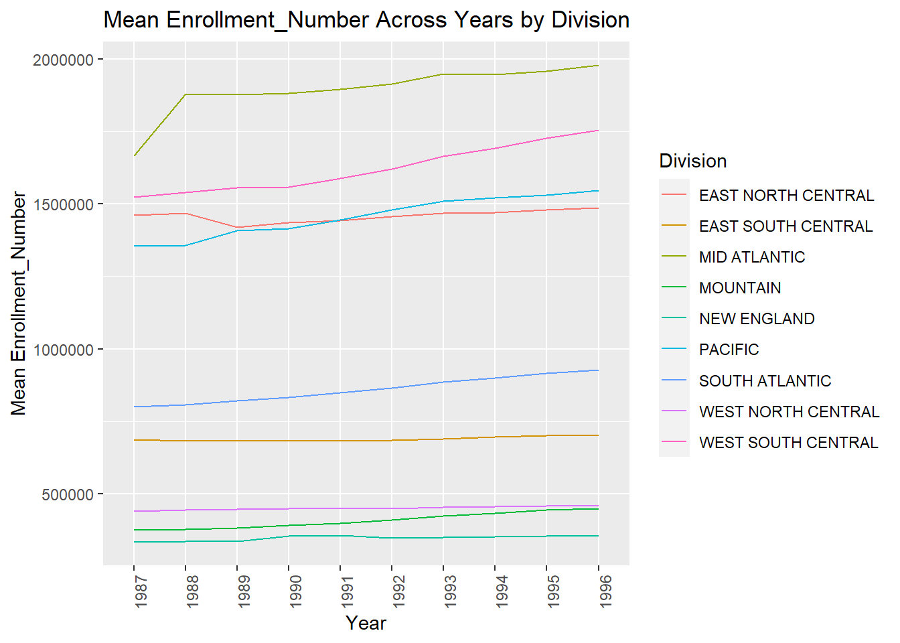
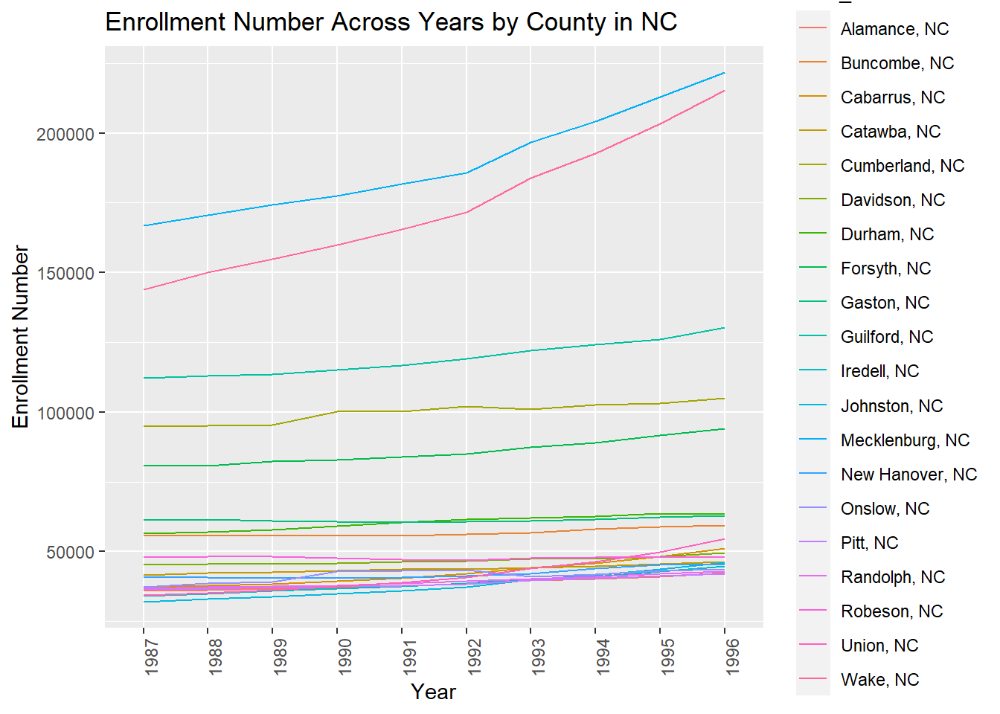
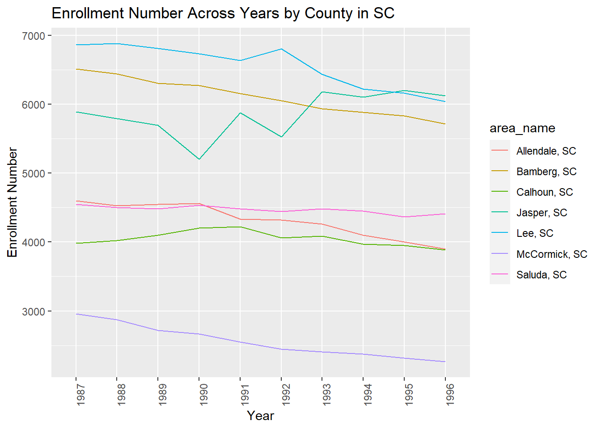
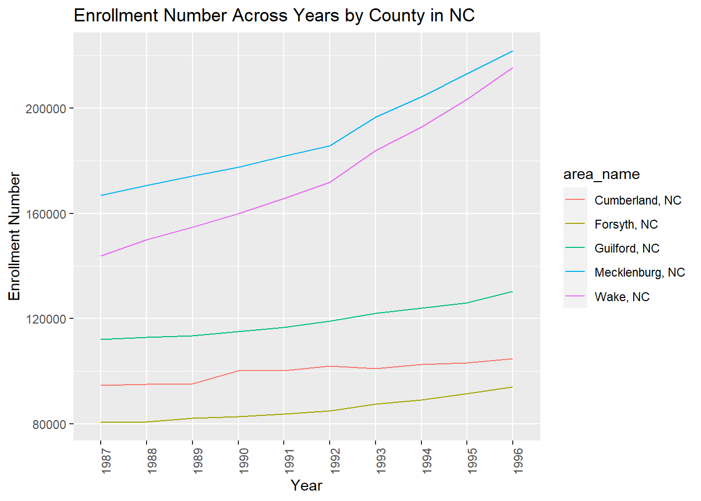
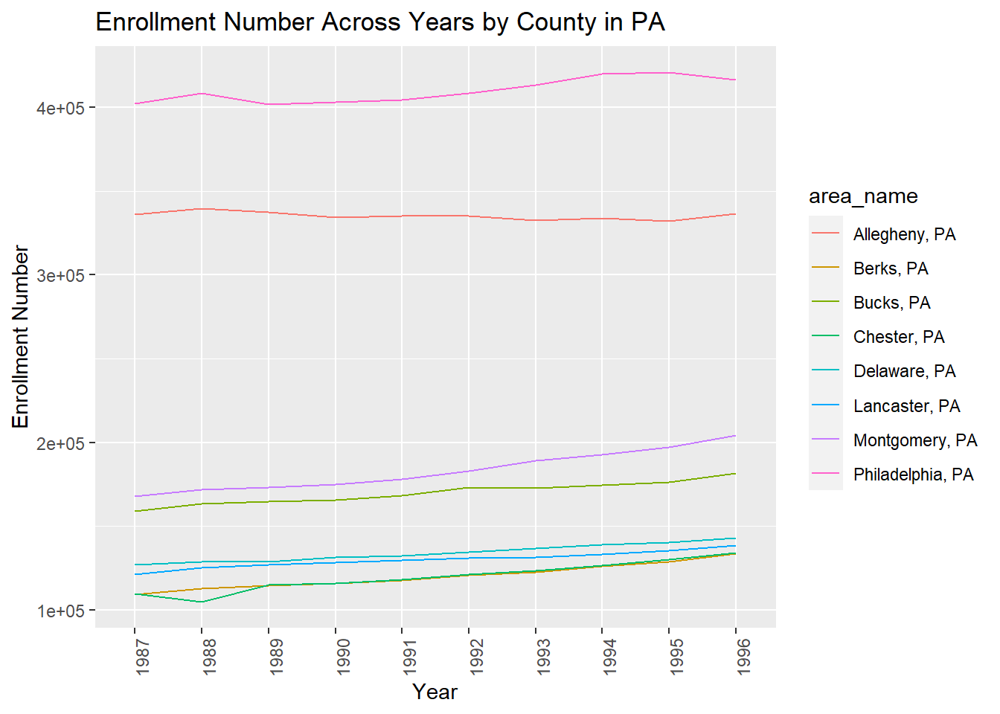
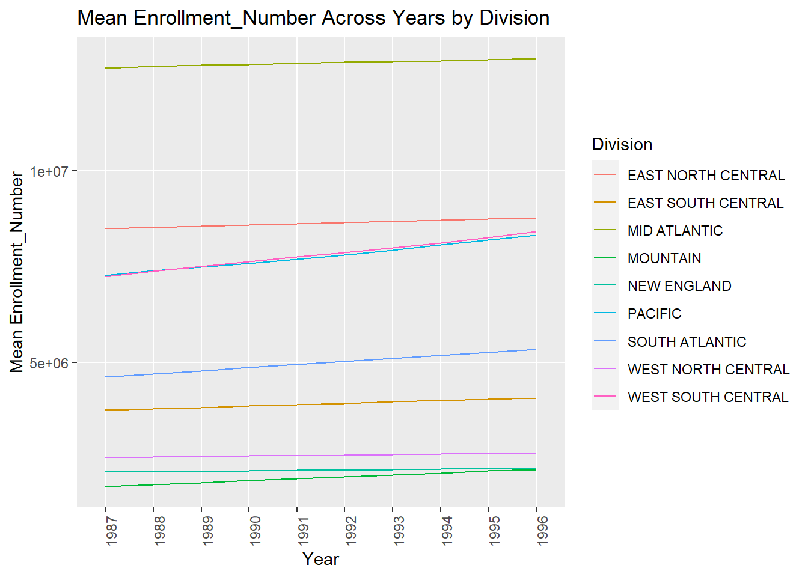
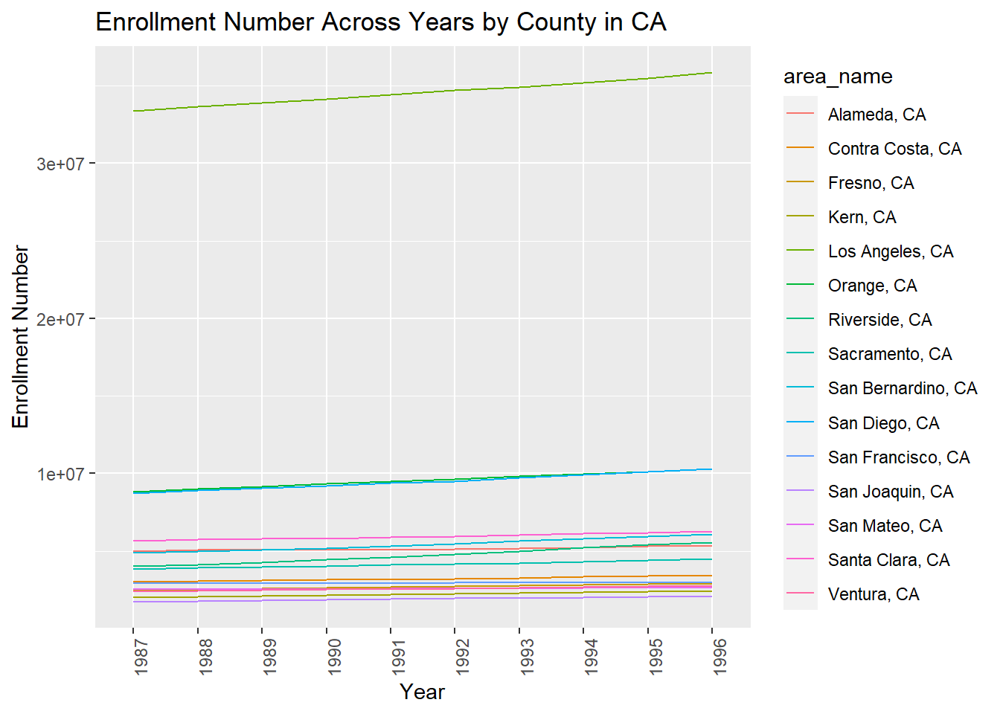
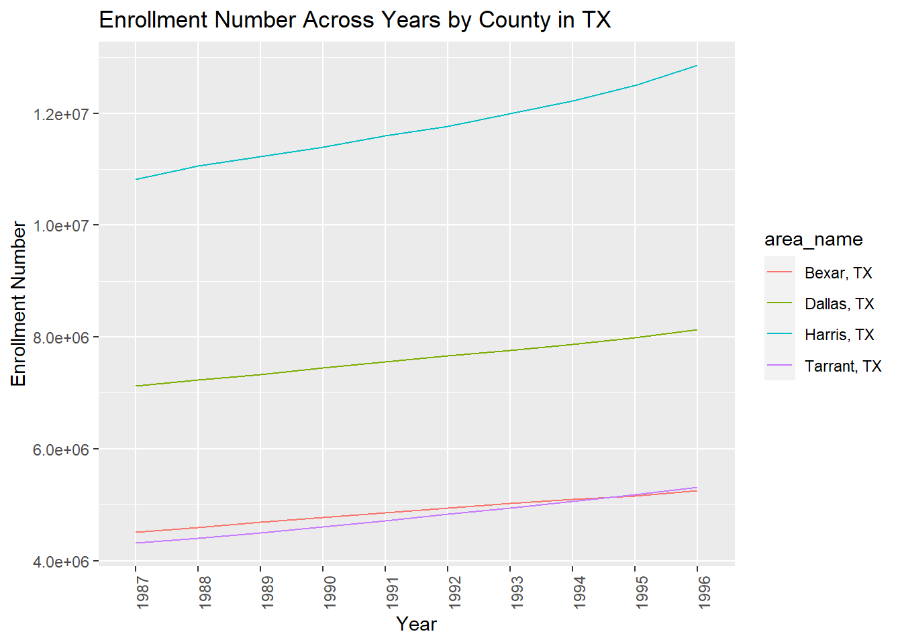
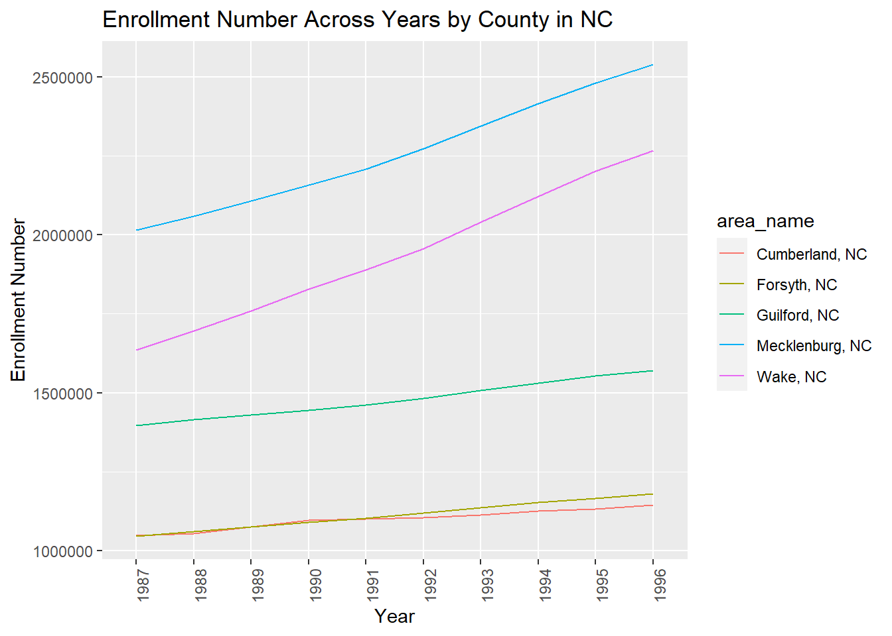
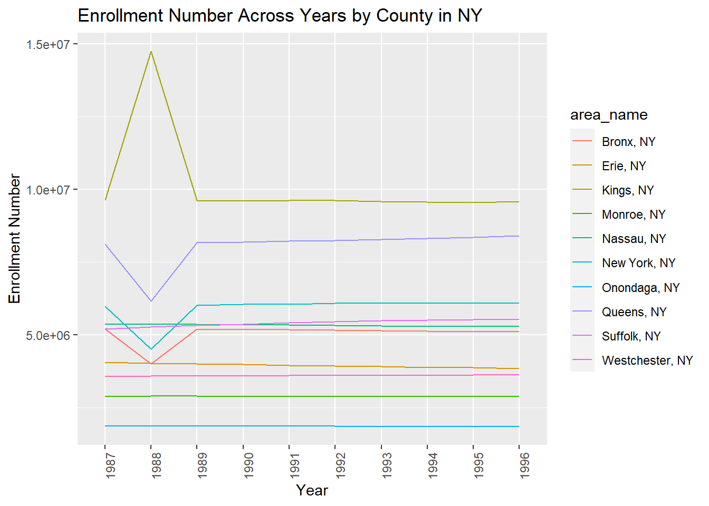

── Attaching core tidyverse packages ──────────────────────── tidyverse 2.0.0 ──
✔ dplyr 1.1.4 ✔ readr 2.1.5
✔ forcats 1.0.0 ✔ stringr 1.5.1
✔ ggplot2 3.4.4 ✔ tibble 3.2.1
✔ lubridate 1.9.3 ✔ tidyr 1.3.1
✔ purrr 1.0.2
── Conflicts ────────────────────────────────────────── tidyverse_conflicts() ──
✖ dplyr::filter() masks stats::filter()
✖ dplyr::lag() masks stats::lag()
ℹ Use the conflicted package (<http://conflicted.r-lib.org/>) to force all conflicts to become errorsProject 1
Introduction
Throughout the first couple weeks of this course, we have been learning how to effectively program in R. Many of the topics of discussion revolve around the topic of Data Science, and how to use it to work with data in a way in which it tells a story. In this project, we will be doing just that. Over the course of this report, we will be working through the process of working with raw data to create clean data sets that can be used to create summaries through plots.
Packages
For this project, we will be working with raw data to perform cleaning, wrangling, and operations. We will work through this primarily using the tidyverse library, so we will read in this package first.
Data Processing
As mentioned above, we will be using multiple .csv files that contain information obtained from the census bureau. The data is from 2010, and our first goal will be to read in one of these data sets and perform some necessary cleaning/wrangling. There are many variables in this data set, but we will only want to look at Area_name, STCOU, and any variable that ends in “D”. Also, the data is originally in wide-format, but we know that statistical analyses are usually performed on long-format data. So, we will include code that changes the data from wide to long format (where each row only has one enrollment value for a specific area name). We will also want to create some new variables here that will be useful later on in the report. The final result of this section will be two data sets: one that contains only non-county data, and one that contains only county-level data.
#Step 1: Read raw data file and make data set with area name, STCOU, and any
# variable ending in "D"
Data_1 <- as_tibble(read_csv(file = "https://www4.stat.ncsu.edu/~online/datasets/EDU01a.csv")) |>
select("area_name"=Area_name,STCOU,ends_with("D")) |>
#Step 2: Convert data into long format (i.e, each row has only one enrollment
# value for a specific Area_name)
pivot_longer(cols= 3:12, names_to = "Enrollment", values_to = "Enrollment_Number")
#Step 3: Create Column for Year, and Course and Year
Year_digits <- as.numeric(substr(Data_1$Enrollment, 8, 9))
Data_1$Year <- as.character(1900 + Year_digits)
Course <- substr(Data_1$Enrollment,1,7)
Data_1$Course_Year <- paste0(Course,Data_1$Year)
#Step 4: Create two data sets
#4.1: Identify rows for county-level data
County_entries <- grep(pattern = ", \\w\\w", Data_1$area_name)
# 4.2: Form data sets for count-level and non-county data, and add a class to # each
County <- Data_1[County_entries,]
class(County) <- c("County", class(County))
State <- Data_1[-County_entries,]
class(State) <- c("State", class(State))
# Step 4: Create State variable for county-level data (2-digit abbreviation)
County$State_abbr <- trimws(substr(County$area_name, nchar(County$area_name)-2, nchar(County$area_name)))
#Step 6: Create new variable named Division (Division criteria found in project # file) for non-county data
State <- mutate(State, Division = ifelse(area_name %in% c("CONNECTICUT","MAINE",
"MASSACHUSETTS", "NEW HAMPSHIRE","RHODE ISLAND","VERMONT"),"NEW ENGLAND",
ifelse(area_name %in% c("NEW JERSEY", "NEW YORK", "PENNSYLVANIA"), "MID ATLANTIC",
ifelse(area_name %in% c("ILLINOIS", "INDIANA", "MICHIGAN", "OHIO", "WISCONSIN"), "EAST NORTH CENTRAL",
ifelse(area_name %in% c("IOWA", "KANSAS", "MINNESOTA","MISSOURI", "NEBRASKA", "NORTH DAKOTA", "SOUTH DAKOTA"), "WEST NORTH CENTRAL",
ifelse(area_name %in% c("DELAWARE", "FLORIDA", "GEORGIA", "MARYLAND", "NORTH CAROLINA", "SOUTH CAROLINA", "VIRGINIA", "DISTRICT OF COLUMBIA", "WEST VIRGINIA"), "SOUTH ATLANTIC",
ifelse(area_name %in% c("ALABAMA", "KENTUCKY", "MISSISSIPPI", "TENNESSEE"), "EAST SOUTH CENTRAL",
ifelse(area_name %in% c("ARKANSAS", "LOISIANA", "OKLAHOMA", "TEXAS"), "WEST SOUTH CENTRAL",
ifelse(area_name %in% c("ARIZONA", "COLORADO", "IDAHO", "MONTANTA", "NEVADA", "NEW MEXICO", "UTAH", "WYOMING"), "MOUNTAIN",
ifelse(area_name %in% c("ALASKA", "CALIFORNIA", "HAWAII", "OREGON", "WASHINGTON"), "PACIFIC", "ERROR"))))))))))
County# A tibble: 31,450 × 7
area_name STCOU Enrollment Enrollment_Number Year Course_Year State_abbr
<chr> <chr> <chr> <dbl> <chr> <chr> <chr>
1 Autauga, AL 01001 EDU010187D 6829 1987 EDU01011987 AL
2 Autauga, AL 01001 EDU010188D 6900 1988 EDU01011988 AL
3 Autauga, AL 01001 EDU010189D 6920 1989 EDU01011989 AL
4 Autauga, AL 01001 EDU010190D 6847 1990 EDU01011990 AL
5 Autauga, AL 01001 EDU010191D 7008 1991 EDU01011991 AL
6 Autauga, AL 01001 EDU010192D 7137 1992 EDU01011992 AL
7 Autauga, AL 01001 EDU010193D 7152 1993 EDU01011993 AL
8 Autauga, AL 01001 EDU010194D 7381 1994 EDU01011994 AL
9 Autauga, AL 01001 EDU010195D 7568 1995 EDU01011995 AL
10 Autauga, AL 01001 EDU010196D 7834 1996 EDU01011996 AL
# ℹ 31,440 more rowsState# A tibble: 530 × 7
area_name STCOU Enrollment Enrollment_Number Year Course_Year Division
<chr> <chr> <chr> <dbl> <chr> <chr> <chr>
1 UNITED STATES 00000 EDU010187D 40024299 1987 EDU01011987 ERROR
2 UNITED STATES 00000 EDU010188D 39967624 1988 EDU01011988 ERROR
3 UNITED STATES 00000 EDU010189D 40317775 1989 EDU01011989 ERROR
4 UNITED STATES 00000 EDU010190D 40737600 1990 EDU01011990 ERROR
5 UNITED STATES 00000 EDU010191D 41385442 1991 EDU01011991 ERROR
6 UNITED STATES 00000 EDU010192D 42088151 1992 EDU01011992 ERROR
7 UNITED STATES 00000 EDU010193D 42724710 1993 EDU01011993 ERROR
8 UNITED STATES 00000 EDU010194D 43369917 1994 EDU01011994 ERROR
9 UNITED STATES 00000 EDU010195D 43993459 1995 EDU01011995 ERROR
10 UNITED STATES 00000 EDU010196D 44715737 1996 EDU01011996 ERROR
# ℹ 520 more rowsNow that we have successfully parsed through the data set, as described above, we have created our non-county (state) and county-level datasets. In the next section, we will perform the same operations; however, it will be done differently.
Note: In the code of this report, references to the non-county data will be denoted by “State”
Data Processing/Combination Functions
Data Processing Functions
For the second raw data set, we will parse through the data as done before; however, it will be done by using functions to perform each of the steps you saw in the previous section. Using functions allows our code to become more flexible and concise. Instead of writing long sections of code over and over again, we can write a function that performs many operations and use it throughout the program. This concept will be detailed here, and information about the specific steps can be found in the previous section
Parsing Step Functions
The following function will perform the first two steps:
step_1_2_funct <- function(df, value_col = "Enrollment"){
df <- df |>
select("area_name" = Area_name, STCOU, ends_with("D")) |>
pivot_longer(cols = 3:12, names_to = "Enrollment",
values_to = "Enrollment_Number")
return(df)
}The next function will perform step 3:
step_3_funct <- function(df){
df <- df |>
mutate(Year = as.character(1900 + as.numeric(substr(Data_1$Enrollment, 8,
9)))) |>
mutate(Course_Year=paste0(substr(Enrollment,1,7),
Year)) |>
collect()
return(df)
}The following functions will be written out of order (step 5, 6, then 4). This first function will be for step 5
step_5_funct <- function(County){
County <- County |>
mutate(State_abbr=trimws(substr(area_name,
nchar(area_name)-2, nchar(area_name)))) |>
collect() |>
as.tibble()
return(County)
}The next function will be for step 6. The code itself is not visually appealing, but it is using the flexibility of the ifelse() function.
step_6_funct <- function(State){
State <- State |>
mutate(Division = ifelse(area_name %in% c("CONNECTICUT","MAINE","MASSACHUSETTS", "NEW HAMPSHIRE", "RHODE ISLAND","VERMONT"), "NEW ENGLAND",
ifelse(area_name %in% c("NEW JERSEY", "NEW YORK", "PENNSYLVANIA"), "MID ATLANTIC",
ifelse(area_name %in% c("ILLINOIS", "INDIANA", "MICHIGAN", "OHIO", "WISCONSIN"), "EAST NORTH CENTRAL",
ifelse(area_name %in% c("IOWA", "KANSAS", "MINNESOTA","MISSOURI", "NEBRASKA", "NORTH DAKOTA", "SOUTH DAKOTA"), "WEST NORTH CENTRAL",
ifelse(area_name %in% c("DELAWARE", "FLORIDA", "GEORGIA", "MARYLAND", "NORTH CAROLINA", "SOUTH CAROLINA", "VIRGINIA", "DISTRICT OF COLUMBIA", "WEST VIRGINIA"), "SOUTH ATLANTIC",
ifelse(area_name %in% c("ALABAMA", "KENTUCKY", "MISSISSIPPI", "TENNESSEE"), "EAST SOUTH CENTRAL",
ifelse(area_name %in% c("ARKANSAS", "LOISIANA", "OKLAHOMA", "TEXAS"), "WEST SOUTH CENTRAL",
ifelse(area_name %in% c("ARIZONA", "COLORADO", "IDAHO", "MONTANTA", "NEVADA", "NEW MEXICO", "UTAH", "WYOMING"), "MOUNTAIN",
ifelse(area_name %in% c("ALASKA", "CALIFORNIA", "HAWAII", "OREGON", "WASHINGTON"), "PACIFIC", "ERROR")))))))))) |>
collect() |>
as.tibble()
return(State)
}This last function will be for completing steps 4, 5 and 6. Step 4 will be the first chunk of code you see, and then we will make use of the functions for step 5 and 6 above:
step_4_5_6_funct <- function(df){
# Step 4
County <- df[grep(pattern = ", \\w\\w", df$area_name),] |>
mutate(State_abbr=trimws(substr(area_name, nchar(area_name)-2,
nchar(area_name)))) |>
collect()
class(County) <- c("County", class(County))
State <- df[-grep(pattern = ", \\w\\w", df$area_name),] |>
collect()
class(State) <- c("State", class(State))
County <- as.tibble(County)
State <- as.tibble(State)
#Step 5
County <- step_5_funct(County)
#Step 6
State <- step_6_funct(State)
Data <- list(County, State)
return(Data)
}Now that we have all of our functions for each step, we can then use a wrapper function to combine the step functions.
wrapper_function <- function(url, default_var_name = "Enrollment") {
df <- read_csv(url)
df <- step_1_2_funct(df)
df <- step_3_funct(df)
df <- step_4_5_6_funct(df)
return(df)
}Now that we have created a function that parses through the data set as needed, using functions within for each step of parsing, we can then apply it to different data sets. This will be detailed in the next section
Data Combination Function
In this section, we will use our newly created data processing function (wrapper_function) to read in and parse through the two raw data sets. These two raw data sets are very similar, and we want to be able to combine the non-county and county-level data from each data set. This provides the need to create a new function that takes in the result of the two calls to the data processing function, and combines the two non-county and two county-level data sets. The result of this function should be one object, that holds the combined non-county and county-level data sets.
#Read in data sets
urla <- "https://www4.stat.ncsu.edu/~online/datasets/EDU01a.csv"
urlb <- "https://www4.stat.ncsu.edu/~online/datasets/EDU01b.csv"
Data_a <- wrapper_function(urla, default_var_name = "Enrollment")
Data_b <- wrapper_function(urlb, default_var_name = "Enrollment")
#Combine non-county and county-level data sets
combine_function <- function(a, b){
Counties <- bind_rows(a[[1]], b[[1]])
class(Counties) <- c("Counties", class(Counties))
States <- bind_rows(a[[2]], b[[2]])
class(States) <- c("States", class(States))
combined_data <- list(Counties, States)
return(combined_data)
}
#Check to see if function works
combine_function(Data_a, Data_b)[[1]]
# A tibble: 62,900 × 7
area_name STCOU Enrollment Enrollment_Number Year Course_Year State_abbr
<chr> <chr> <chr> <dbl> <chr> <chr> <chr>
1 Autauga, AL 01001 EDU010187D 6829 1987 EDU01011987 AL
2 Autauga, AL 01001 EDU010188D 6900 1988 EDU01011988 AL
3 Autauga, AL 01001 EDU010189D 6920 1989 EDU01011989 AL
4 Autauga, AL 01001 EDU010190D 6847 1990 EDU01011990 AL
5 Autauga, AL 01001 EDU010191D 7008 1991 EDU01011991 AL
6 Autauga, AL 01001 EDU010192D 7137 1992 EDU01011992 AL
7 Autauga, AL 01001 EDU010193D 7152 1993 EDU01011993 AL
8 Autauga, AL 01001 EDU010194D 7381 1994 EDU01011994 AL
9 Autauga, AL 01001 EDU010195D 7568 1995 EDU01011995 AL
10 Autauga, AL 01001 EDU010196D 7834 1996 EDU01011996 AL
# ℹ 62,890 more rows
[[2]]
# A tibble: 1,060 × 7
area_name STCOU Enrollment Enrollment_Number Year Course_Year Division
<chr> <chr> <chr> <dbl> <chr> <chr> <chr>
1 UNITED STATES 00000 EDU010187D 40024299 1987 EDU01011987 ERROR
2 UNITED STATES 00000 EDU010188D 39967624 1988 EDU01011988 ERROR
3 UNITED STATES 00000 EDU010189D 40317775 1989 EDU01011989 ERROR
4 UNITED STATES 00000 EDU010190D 40737600 1990 EDU01011990 ERROR
5 UNITED STATES 00000 EDU010191D 41385442 1991 EDU01011991 ERROR
6 UNITED STATES 00000 EDU010192D 42088151 1992 EDU01011992 ERROR
7 UNITED STATES 00000 EDU010193D 42724710 1993 EDU01011993 ERROR
8 UNITED STATES 00000 EDU010194D 43369917 1994 EDU01011994 ERROR
9 UNITED STATES 00000 EDU010195D 43993459 1995 EDU01011995 ERROR
10 UNITED STATES 00000 EDU010196D 44715737 1996 EDU01011996 ERROR
# ℹ 1,050 more rowsNow that we have successfully combined the raw data and created an object to hold the two new data sets, we can now look to create functions for summarizing.
Generic Functions For Summarizing Data
Since we have our list object with the non-county and county-level data sets, we can look to create functions that produce plots for summarizing important enrollment information. The first function we will create is for the non-county data set. In this function we will produce a plot that expresses the mean value of enrollment, across the years, for each division. On the x-axis, will be the numeric year value; on the y-axis, will be the mean enrollment number for each division and numeric year. This function will also remove the “ERROR” setting of Division.
plot.state <- function(data, var_name = "Enrollment_Number") {
# Remove the "ERROR" Division setting
subset_data <- data |>
filter(Division != "ERROR")
#Obtain the mean enrollment number for each division and numeric year
mean_values <- subset_data |>
group_by(Year, Division) |>
summarize(mean_value = mean(get(var_name), na.rm = TRUE), .groups = 'drop')
#Create the line plot
g <- ggplot(mean_values, aes(x = Year, y = mean_value, color = Division,
group = Division)) +
geom_line() +
labs(title = paste("Mean", var_name, "Across Years by Division"),
x = "Year",
y = paste("Mean", var_name)) +
theme(axis.text.x = element_text(angle = 90))
print(g)
}
#Create S3 Method
plot.class_state_df <- function(df, var_name = "Enrollment_Number") {
plot.state(df, var_name)
}Now, for the County class data set, we will produce a similar function, but with more flexibility. The function will allow the user to input several different arguments: Specify the state of interest (default value will be “NC”); Determine whether we want to look at the “top” or “bottom” counties (default value of “top”); Determine how many of the “top” or “bottom” counties we want to look at (default value of 5).
Within this function, we will find the overall mean of the statistic for each Area_name and sort the mean values from largest to smallest if “top” is specified, or smallest to largest if “bottom” is specified. We will obtain the top or bottom x number of area names from the previous step - where x is one of the arguments the user can specify. Lastly, we will filter the data for this state to only include the area name’s from the previous step. This last step will be the data we will use to plot.
Note: We will not be plotting the mean values. The data used for plotting will be the enrollment number, for each county, across years. The counties that will be used, are the top/bottom x mean enrollment counties
plot.county <- function(data, var_name = "Enrollment_Number", state = "NC",
group = "top", number = 5){
#Only include observations from specified state
subset_data <- data |>
filter(State_abbr == state)
#Obtain overall mean for statistic for each area name and sort
values <- subset_data |>
group_by(area_name) |>
summarize(value = mean(get(var_name), na.rm = TRUE), .groups = 'drop') |>
arrange(if (group == "top") desc(value) else value)
#Get the names of counties we want to look at
counties <- values |>
head(number) |>
pull(area_name)
#Obtain the data we use to plot
plot_data <- subset_data |>
group_by(area_name, Year) |>
filter(area_name %in% counties) |>
summarize(statistic = sum(get(var_name), na.rm = TRUE),
.groups='drop')
#Create the line plot
g <- ggplot(plot_data, aes(x = Year, y = statistic,
color = area_name, group = area_name)) +
geom_line() +
labs(title = paste("Enrollment Number Across Years by County in",
state),
x = "Year",
y = "Enrollment Number") +
theme(axis.text.x = element_text(angle = 90))
print(g)
}
#Create S3 Method
plot.class_county_df <- function(df, var_name = "Enrollment_Number",
state = "NC", group = "top", number = 5) {
plot.county(df, var_name, state, group, number)
}Both plotting functions have now been successfully created. In the next section, we will detail the flexibility of not noly these functions, but the data processing/combining functions, and see how they work on similar raw .csv files.
Putting It All Together
In the last section of this report, we will be putting all of the previous sections together to show the usage of our functions across multiple raw data sets. To start, we will run our data processing function on the two census bureau data urls we used above. Then, we will run our combination function to combine these two raw data sets to create one object that holds our non-county and county-level data sets.
urla <- "https://www4.stat.ncsu.edu/~online/datasets/EDU01a.csv"
EDU01a <- wrapper_function(urla, default_var_name = "Enrollment")
urlb <- "https://www4.stat.ncsu.edu/~online/datasets/EDU01b.csv"
EDU01b <- wrapper_function(urlb, default_var_name = "Enrollment")
EDU01 <- combine_function(EDU01a, EDU01b)
EDU01[[1]]
# A tibble: 62,900 × 7
area_name STCOU Enrollment Enrollment_Number Year Course_Year State_abbr
<chr> <chr> <chr> <dbl> <chr> <chr> <chr>
1 Autauga, AL 01001 EDU010187D 6829 1987 EDU01011987 AL
2 Autauga, AL 01001 EDU010188D 6900 1988 EDU01011988 AL
3 Autauga, AL 01001 EDU010189D 6920 1989 EDU01011989 AL
4 Autauga, AL 01001 EDU010190D 6847 1990 EDU01011990 AL
5 Autauga, AL 01001 EDU010191D 7008 1991 EDU01011991 AL
6 Autauga, AL 01001 EDU010192D 7137 1992 EDU01011992 AL
7 Autauga, AL 01001 EDU010193D 7152 1993 EDU01011993 AL
8 Autauga, AL 01001 EDU010194D 7381 1994 EDU01011994 AL
9 Autauga, AL 01001 EDU010195D 7568 1995 EDU01011995 AL
10 Autauga, AL 01001 EDU010196D 7834 1996 EDU01011996 AL
# ℹ 62,890 more rows
[[2]]
# A tibble: 1,060 × 7
area_name STCOU Enrollment Enrollment_Number Year Course_Year Division
<chr> <chr> <chr> <dbl> <chr> <chr> <chr>
1 UNITED STATES 00000 EDU010187D 40024299 1987 EDU01011987 ERROR
2 UNITED STATES 00000 EDU010188D 39967624 1988 EDU01011988 ERROR
3 UNITED STATES 00000 EDU010189D 40317775 1989 EDU01011989 ERROR
4 UNITED STATES 00000 EDU010190D 40737600 1990 EDU01011990 ERROR
5 UNITED STATES 00000 EDU010191D 41385442 1991 EDU01011991 ERROR
6 UNITED STATES 00000 EDU010192D 42088151 1992 EDU01011992 ERROR
7 UNITED STATES 00000 EDU010193D 42724710 1993 EDU01011993 ERROR
8 UNITED STATES 00000 EDU010194D 43369917 1994 EDU01011994 ERROR
9 UNITED STATES 00000 EDU010195D 43993459 1995 EDU01011995 ERROR
10 UNITED STATES 00000 EDU010196D 44715737 1996 EDU01011996 ERROR
# ℹ 1,050 more rowsNow, we will make use of our summarizing functions that creates plots. We run these functions multiple times, specifying different values to our arguments to check the flexibility of the functions.
class_county_df <- EDU01[[1]]
class(class_county_df) <- c("class_county_df", class(class_county_df))
class_state_df <- EDU01[[2]]
class(class_state_df) <- c("class_state_df", class(class_state_df))
plot(class_state_df)
plot(class_county_df, state = "NC", group = "top", number = 20)
plot(class_county_df, state = "SC", group = "bottom", number = 7)
plot(class_county_df)
plot(class_county_df, state = "PA", group = "top", number = 8)
We can see that the use of these functions together, work. We are now going to try our functions on similar data sets. To start, we will read in and use our data processing function on four different raw data sets.
urla <- "https://www4.stat.ncsu.edu/~online/datasets/PST01a.csv"
PST01a <- wrapper_function(urla, default_var_name = "Enrollment")
urlb <- "https://www4.stat.ncsu.edu/~online/datasets/PST01b.csv"
PST01b <- wrapper_function(urlb, default_var_name = "Enrollment")
urlc <- "https://www4.stat.ncsu.edu/~online/datasets/PST01c.csv"
PST01c <- wrapper_function(urlc, default_var_name = "Enrollment")
urld <- "https://www4.stat.ncsu.edu/~online/datasets/PST01d.csv"
PST01d <- wrapper_function(urld, default_var_name = "Enrollment")After successfully reading in and parsing our data, we can use our combination function multiple times to get all four data sets into one, and create two final class data sets.
combine_1 <- combine_function(PST01a, PST01b)
combine_2 <- combine_function(combine_1, PST01c)
PST01 <- combine_function(combine_2, PST01d)
PST01[[1]]
# A tibble: 125,800 × 7
area_name STCOU Enrollment Enrollment_Number Year Course_Year State_abbr
<chr> <chr> <chr> <dbl> <chr> <chr> <chr>
1 Autauga, AL 01001 PST015171D 25508 1987 PST01511987 AL
2 Autauga, AL 01001 PST015172D 27166 1988 PST01511988 AL
3 Autauga, AL 01001 PST015173D 28463 1989 PST01511989 AL
4 Autauga, AL 01001 PST015174D 29266 1990 PST01511990 AL
5 Autauga, AL 01001 PST015175D 29718 1991 PST01511991 AL
6 Autauga, AL 01001 PST015176D 29896 1992 PST01511992 AL
7 Autauga, AL 01001 PST015177D 30462 1993 PST01511993 AL
8 Autauga, AL 01001 PST015178D 30882 1994 PST01511994 AL
9 Autauga, AL 01001 PST015179D 32055 1995 PST01511995 AL
10 Autauga, AL 01001 PST025181D 31985 1996 PST02511996 AL
# ℹ 125,790 more rows
[[2]]
# A tibble: 2,120 × 7
area_name STCOU Enrollment Enrollment_Number Year Course_Year Division
<chr> <chr> <chr> <dbl> <chr> <chr> <chr>
1 UNITED STATES 00000 PST015171D 206827028 1987 PST01511987 ERROR
2 UNITED STATES 00000 PST015172D 209283904 1988 PST01511988 ERROR
3 UNITED STATES 00000 PST015173D 211357490 1989 PST01511989 ERROR
4 UNITED STATES 00000 PST015174D 213341552 1990 PST01511990 ERROR
5 UNITED STATES 00000 PST015175D 215465246 1991 PST01511991 ERROR
6 UNITED STATES 00000 PST015176D 217562728 1992 PST01511992 ERROR
7 UNITED STATES 00000 PST015177D 219759860 1993 PST01511993 ERROR
8 UNITED STATES 00000 PST015178D 222095080 1994 PST01511994 ERROR
9 UNITED STATES 00000 PST015179D 224567234 1995 PST01511995 ERROR
10 UNITED STATES 00000 PST025181D 229466391 1996 PST02511996 ERROR
# ℹ 2,110 more rowsFinally, let’s run our summarizing functions with different specifications to once again check the flexibility of the functions.
class_county_df <- PST01[[1]]
class(class_county_df) <- c("class_county_df", class(class_county_df))
class_state_df <- PST01[[2]]
class(class_state_df) <- c("class_state_df", class(class_state_df))
plot(class_state_df)
plot(class_county_df, state = "CA", number = 15)
plot(class_county_df, state = "TX", number = 4)
plot(class_county_df)
plot(class_county_df, state = "NY", number = 10)
We have shown that our summerical ploting functions are indeed working. This will lead us to the conclusion of this report.
Conclusion
As we can see in this report, the use of functions to perform specific data parsing steps allows our program to become much more flexible. If changes to data sets are made, setting up our program in this way will decrease the amount of changes we need to make in said program. It is important to note that all of the data sets used in this report are very similar. The flexibility of this program is constrained to the features of these similar data sets (i.e., .csv files, variable names, etc.). Although this might be the case, we can still see the usefulness of not only being able to parse through data, but the advantage of using functions.